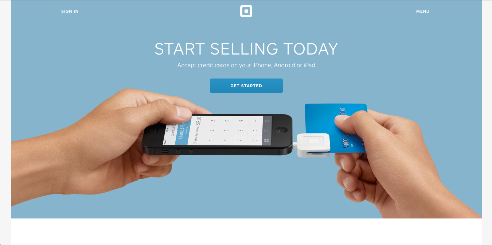
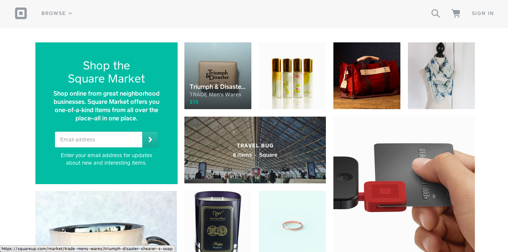
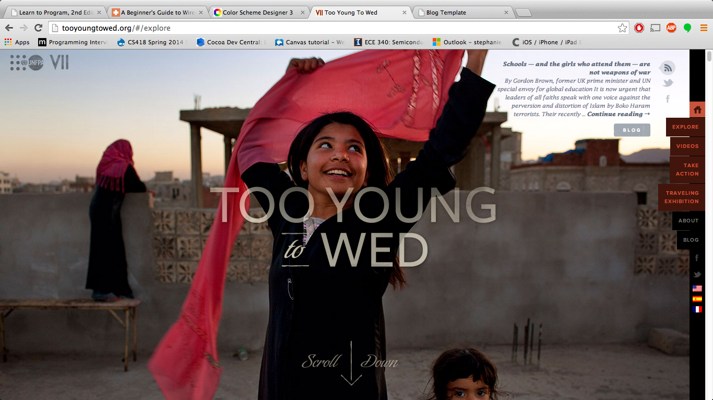
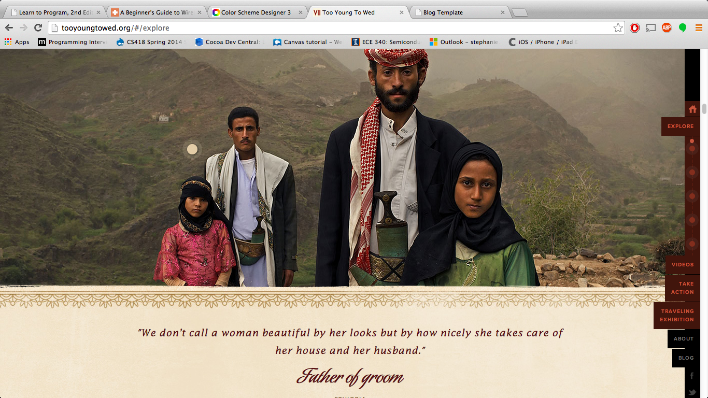
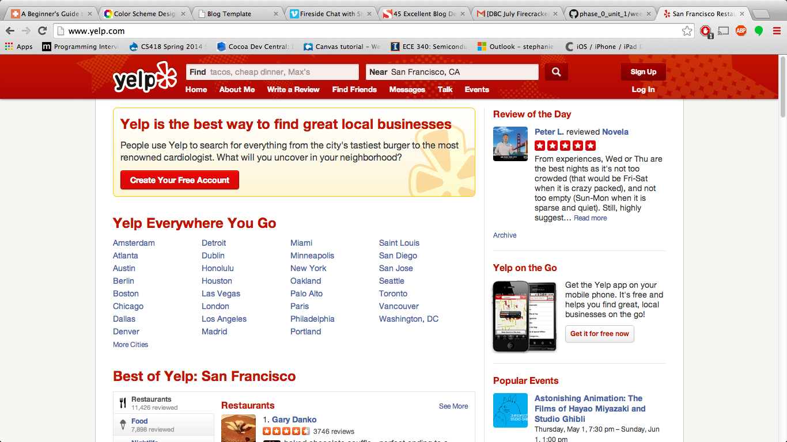
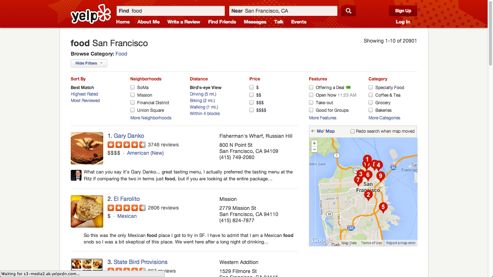

May 30, 2014
Square


squareup.com is one of the most beautiful visual web designs I have seen. While I don't use any of their services, I really like how their landing page and market page. The landing page has lovely effects on scrolling. Videos play when you reach their section and it is very clean and informative. With just a few shades of color, the page acheives a lot visually.
The market page has a Pintrest-like infinite scroll and is very simple. Just pictures, and slight changes on hover
Too Young to Wed


I ran into this website when I was doing a project for a children's orphanage in Haiti. I didn't know what good websites for non-profits looked like so I Googled it. this website has beautiful scrolling effects. I think the only flaw is how long it takes to load. From looking at the best websites, I really beleive that webdesign has a lot to do with the collaboration with designers and artists. Great photography can make a website even greater.
Yelp


Yelp's website provides a service which I use a lot. I like it's website because it is highly functional. They make the search very simple and results are easy to compare.